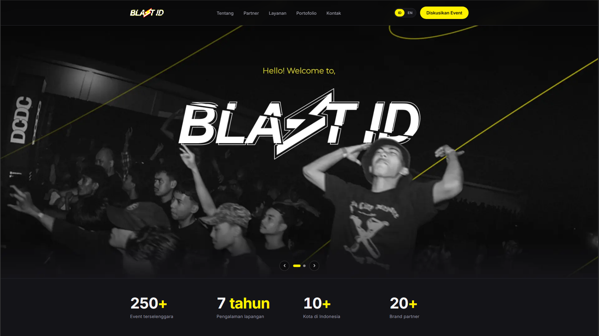
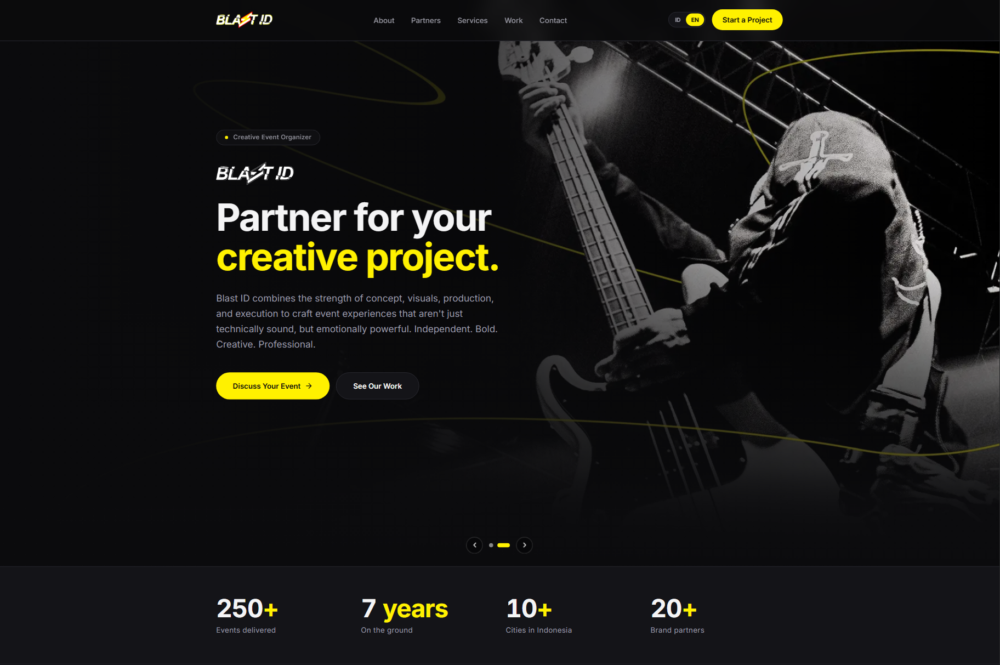
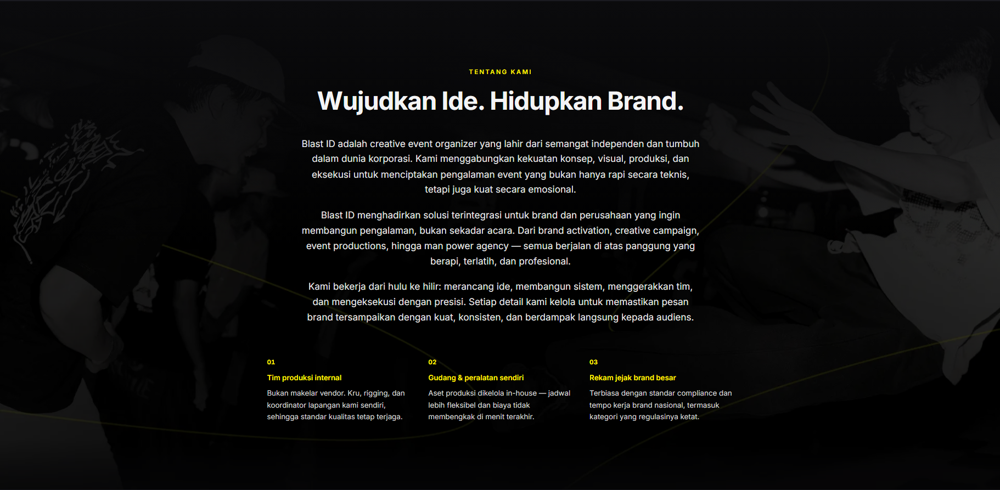
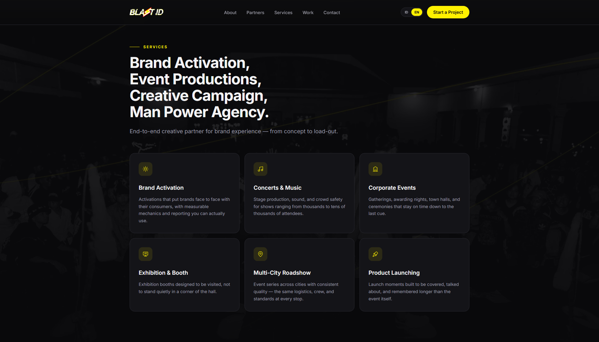
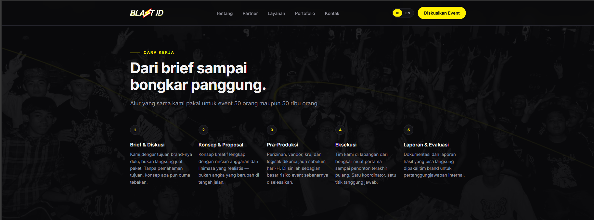
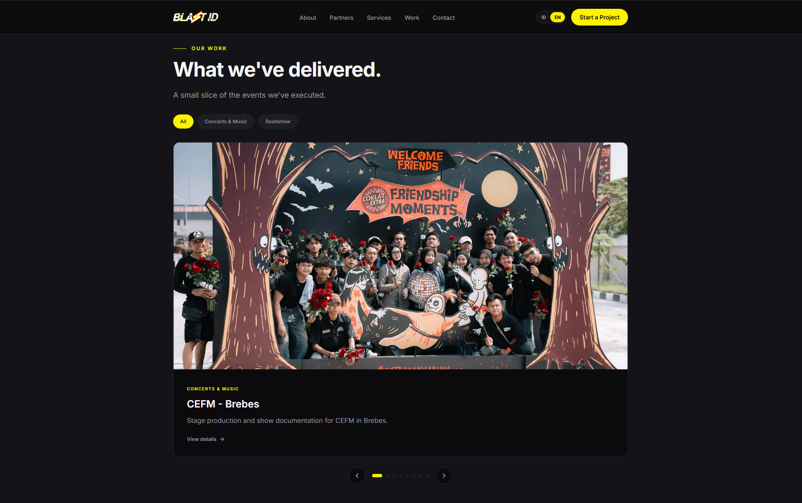
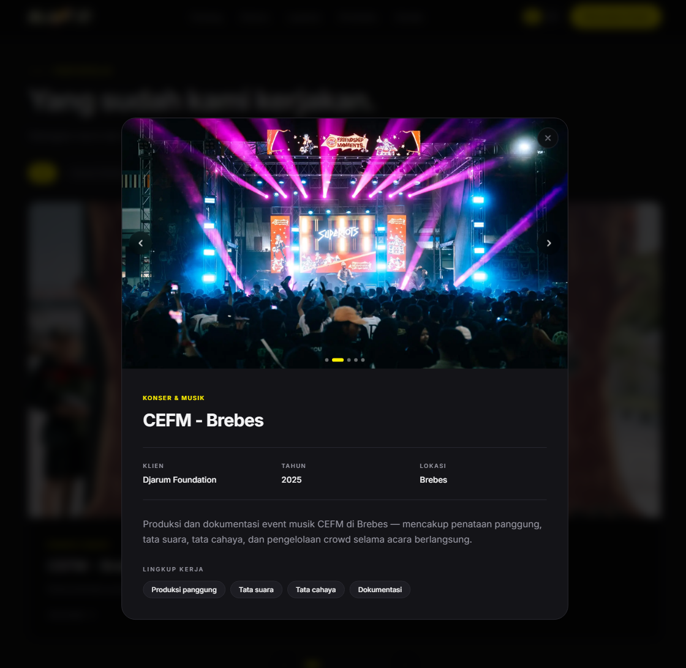
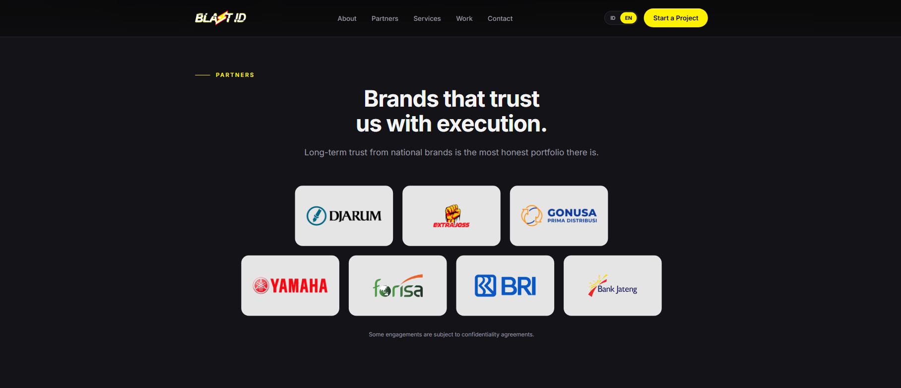
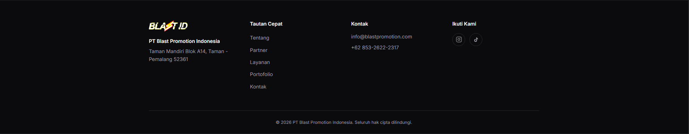

Landing page satu halaman untuk BLAST ID — event organizer & brand activation — menampilkan profil perusahaan, portofolio proyek, daftar partner, dan kontak langsung, tersedia dalam Bahasa Indonesia dan Inggris.
BLAST ID melayani klien dari brand nasional (Djarum, Yamaha) sampai bank daerah, tapi belum punya kehadiran digital yang mencerminkan skala kerja mereka — portofolio event tersebar di media sosial, dan calon klien tidak punya satu tempat untuk melihat rekam jejak perusahaan sebelum menghubungi. Tiga kebutuhan utamanya:
Seluruh konten teks dipisah total dari komponen lewat sistem
tipe bersama (content/types.ts): file
id.ts dan en.ts sama-sama harus memenuhi tipe
Content yang identik. Kalau satu bahasa ketinggalan
menambahkan field baru, build TypeScript-nya gagal — bukan diam-diam
lolos dan ketahuan setelah live. Routing bahasa memakai segmen
app/[locale]/ supaya <html lang> selalu
benar dan /id & /en masing-masing punya
URL yang bisa di-index mesin pencari.
Untuk masalah aset yang belum lengkap, dipakai komponen
ImageSlot yang menghitung rasio placeholder sama persis
dengan foto aslinya. Selama field foto di konten masih null,
yang tampil adalah placeholder bergaris dengan dimensi identik — begitu
foto asli dipasang, tidak ada layout shift sama sekali.
Palet warna diambil langsung dari elemen logo (kuning petir, merah outline, hitam wordmark) dan didefinisikan sekali sebagai CSS custom property di satu tempat — komponen hanya memakai utility class, tidak ada warna yang di-hardcode berulang di banyak file.
Toggle bahasa dengan URL terpisah per locale, dijaga konsisten oleh TypeScript, bukan konvensi manual.
Detail proyek (klien, tahun, lokasi, cakupan kerja) dengan carousel foto dan modal detail per proyek.
Angka statistik perusahaan menghitung naik secara halus saat pertama masuk viewport, sekali saja.
Slot foto & logo partner yang belum terisi tetap menjaga rasio dan ukuran asli, jadi tidak ada elemen "meloncat" saat aset dipasang.
Animasi masuk saat discroll otomatis dinonaktifkan untuk pengguna dengan preferensi prefers-reduced-motion.
Tombol kontak membuka WhatsApp dengan pesan pembuka yang sudah terisi otomatis.
Menampilkan logo brand yang pernah bekerja sama, dari brand nasional sampai institusi finansial.
Metadata (title, description, keywords) terpisah untuk tiap locale, bukan satu metadata generik untuk semua bahasa.









Routing locale memakai konvensi proxy.ts — pengganti
middleware.ts yang sudah deprecated di Next.js 16 — untuk
mengarahkan / ke locale default tanpa pernah membiarkan
pengunjung mendarat di URL tanpa bahasa.
Content dipakai bersama oleh id.ts
dan en.ts — field baru yang cuma ditambah di satu bahasa
akan membuat build gagal, jadi ketidaksesuaian ketahuan sebelum deploy,
bukan setelah pengunjung Inggris menemukan halaman kosong.
export type Content = { hero: { eyebrow: string; titleLead: string; // ... }; // ...seluruh struktur konten situs }; // content/id.ts dan content/en.ts SAMA-SAMA harus: export const id: Content = { /* ... */ }; export const en: Content = { /* ... */ }; // tipe berbeda = TypeScript error
if (src) { return <Image src={src} alt={alt} fill sizes={sizes} className="object-cover" />; } // src masih null: placeholder dengan pola garis diagonal, // mengisi ruang yang PERSIS sama dengan ukuran foto final return ( <div className={cn("bg-overlay relative flex items-center justify-center", className)}> <span>{label ?? "Foto menyusul"}</span> </div> );
Reveal yang dipakai di seluruh halaman otomatis
melewati animasi kalau pengguna mengaktifkan prefers-reduced-motion
di sistem operasinya — bukan cuma mempercepat animasinya, tapi benar-benar meniadakannya.
const reduced = useReducedMotion(); if (reduced) { const Plain = as; return <Plain className={className}>{children}</Plain>; // tanpa animasi sama sekali } return ( <Component initial={{ opacity: 0, y: 24 }} whileInView={{ opacity: 1, y: 0 }} viewport={{ once: true, margin: "-80px" }} transition={{ duration: 0.6, delay, ease: [0.22, 1, 0.36, 1] }}> {children} </Component> );
useInView memastikan animasi hanya berjalan sekali saat
elemen pertama masuk layar, dengan kurva ease-out supaya kenaikannya
cepat di awal dan melambat mendekati angka akhir.
const inView = useInView(ref, { once: true, margin: "-60px" }); const tick = (now) => { const elapsed = now - start; const progress = Math.min(elapsed / duration, 1); // ease-out kubik: cepat di awal, melambat di akhir setDisplay(Math.round(value * (1 - Math.pow(1 - progress, 3)))); if (progress < 1) frame = requestAnimationFrame(tick); };
Project ini melatih cara membangun untuk konten yang belum lengkap
tanpa membuat situsnya terlihat "kosong" — ImageSlot dan
status "masih placeholder" di README bukan cuma catatan
sementara, tapi keputusan desain: situs harus tetap presentable di
setiap tahap pengisian konten, bukan menunggu semua aset final baru
layak ditunjukkan ke klien.
Pelajaran lain: memaksa konsistensi lewat tipe (seperti
Content yang dipakai bersama id.ts/en.ts)
jauh lebih dapat diandalkan dibanding sekadar mengingat untuk selalu
update dua file bersamaan — terutama untuk project yang isinya akan
terus di-update setelah saya selesai kerjakan.
Catatan soal akses kode. Repositori bersifat Private — Showcase repository dari project ini bisa langsung dilihat di GitHub.